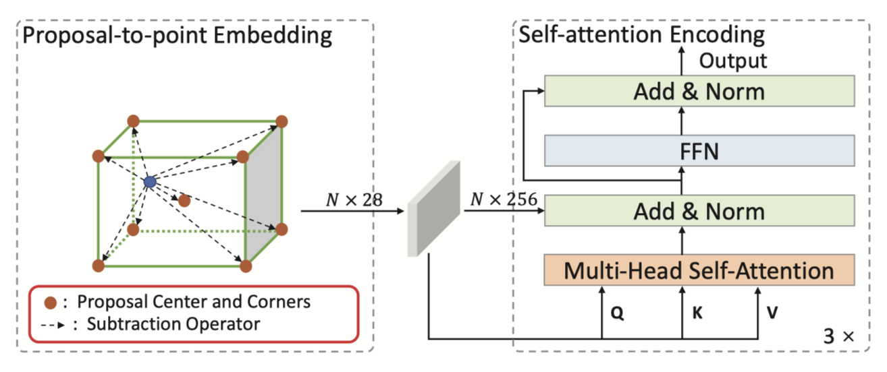
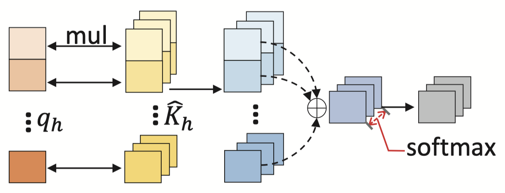
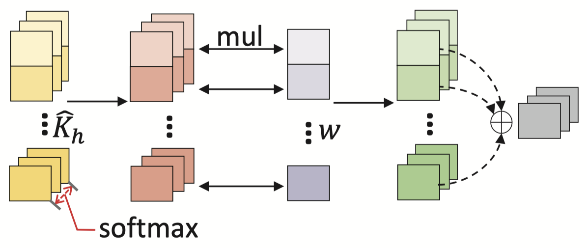
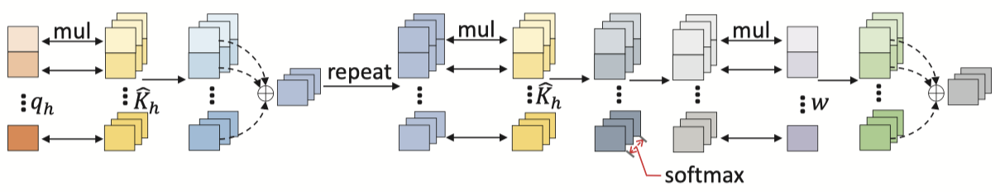

选择它的原因：
- 利用 Transformer 对 3D 点云进行目标检测，与动点剔除任务较为接近；
- 采用 \(KITTI\) 室外数据集进行评测，与我目前使用的 \( SemanticKitti\) 数据集同源；
- 代码在 github 开源，易于学习。
- 代码是基于 OpenPCDet 框架，数据 - 模型分离。
1. Advantages
- CT3D 是一种新颖的端到端两阶段 3D 物体检测框架，方便集成于各个 RPN backbone；
- 引入了 proposal-to-point 嵌入来在编码器模块中有效地编码 RPN 提案信息。
- 利用通道重新加权方法来增强 Standard Transformer Decoder。
2. Pipeline
2.1 Overview
原始点首先被输入到 RPN 中以生成 3D proposal。 然后，原始点以及相应的 proposal 由 proposal-to-point 编码模块和 channel-wise 解码模块组成的通道 Transformer 进行处理。 具体来说，proposal-to-point 编码模块是用全局 proposal 感知上下文信息来调制每个点特征。 之后，编码后的点特征通过 channel-wise 解码模块转换为有效的 proposal 特征表示，用于置信度预测和框回归。
2.2 RPN Module
2.2.1 Goal
对一个拥有 \(C\) 维特征和三维坐标的点云 \(\mathbf{P}\)，经过 RPN 网络后，生成 3D 边界框。其中边界框包括：中心坐标 \(\mathbf{p}^c = [x^c, y^c, z^c]\)，长度 \(l^c\), 宽度 \(w^c\)，高度 \(h^c\) 以及方向 \(\theta^c\)。
在本文中，采用 SECOND 的 3D voxel CNN 作为 default RPN。
2.3 Proposal-to-point Encoding Module
2.3.1 Goal
为了增强 RPN 提出的 proposals，采用两步战略：首先采用 proposal-to-point embedding，将 proposal 映射为点特征；其次采用自注意力编码，通过对相应 proposal 内点之间的相对关系进行建模来细化点特征。

图 2 Proposal-to-point encoding Pipeline
2.3.2 Proposal-to-point Embedding
得到 RPN 生成的 Proposal 后，根据 proposal 在点云中划分出按比例缩放的 RoI 区域，目的是希望通过尽可能多的对象点来补偿 proposal 和相应的地面实况框之间的误差。
具体的，缩放后的 RoI 区域是一个无限高度，半径为 \( r=\alpha \sqrt{(\frac{l^c}{2})^2+(\frac{w^c}{2})^2}\) 的圆柱体，其中 \(\alpha\) 是超参数，\( l^c、w^c\) 分别表示 proposal 的长度和宽度。接着从经过缩放的 RoI 区域中随机采样 \(N=256\) 个点用作后续处理。\((N=\{ \mathbf{p}_1,...\mathbf{p}_N \})\)
首先计算每个采样点和 proposal 中心点之间的相对坐标，以统一输入距离特征，表示为 \(\Delta \mathbf{p}^c_i=\mathbf{p}_i-\mathbf{p}^c, \forall \mathbf{p}_i \in \mathcal{N}\)。接着可以将 proposal 信息与每个点特征相结合，如第 \(i\) 个点的特征可以表示为：\([\Delta \mathbf{p}^c_i,l^c,w^c,h^c,\theta ^c,f^r_i]\)，这里 \(f^r_i\) 表示诸如反射率等原始点云特征。
本文提出一种新颖的关键点减法策略计算每个点和其所在 proposal 的八个角点的差。计算相对坐标的方式为：\(\Delta \mathbf{p}^j_i=\mathbf{p}_i-\mathbf{p}^j, j=1,...,8\)，这里 \(\mathbf{p}^j\) 表示第 \(j\) 个角点的坐标。此时前文提到的一些特征信息（例如 \(l^c,w^c,h^c 以及 \theta ^c\)）可以体现在不同维度的距离信息中。通过这种方式，新生成的相对坐标 \(\Delta \mathbf{p}^j_i\) 可以视为对 proposal 信息更好的表示。对每个点云 \(\mathbf{p}_i\)，proposal-guided 特征可以表示为：
\( \begin{align} \mathbf{f}_i = \mathcal{A} ([\Delta \mathbf{p}^c_i, \Delta \mathbf{p}^1_i, ..., \Delta \mathbf{p}^8_i, f^r_i])\in \mathbb{R}^D \end{align}\)
这里 \(\mathcal{A}(·)\) 是线性投影层，将点云特征投影到一个高维度的 Embedding 层中。
2.3.3 Self-attention Encoding
经过 Proposal-to-point Encoding Module 后的点云特征随后被送入多头自注意力层中，接着是具有残差结构的 FCN 中，用来编码丰富的上下文关系和 proposal 中点的依赖性，以细化点特征。
多头自注意力层与标准 Transformer 中相比，缺少了位置编码环节，原因是位置信息已经包含在点云特征中。定义 \(\mathbf{X}=[\mathbf{f}^T_1,...\mathbf{f}^T_N]^T \in \mathbb{R}^{N \times D}\) 作为具有 D 个维度的嵌入点特征。则有 \( \mathbf{Q}=\mathbf{W}_q \mathbf{X}; \mathbf{K}=\mathbf{W}_k \mathbf{X}; \mathbf{V}=\mathbf{W}_v \mathbf{X}\)，这里 \( \mathbf{W}_q, \mathbf{W}_k, \mathbf{W}_v \in \mathbb{R}^{N \times N}\) 是线性投影，\(\mathbf{Q}, \mathbf{K}, \mathbf{V}\) 称作 query，key 和 value 嵌入，这三个嵌入将作为多头自注意力的输入进行处理。在一个具有 \(H\) 个 head 的注意力模块中，\(\mathbf{Q}, \mathbf{K}, \mathbf{V}\) 可以进一步被分为 \(\mathbf{Q}=[\mathbf{Q}_1,...,\mathbf{Q}_H], \mathbf{K}=[\mathbf{K}_1,...,\mathbf{K}_H], \mathbf{V}=[\mathbf{V}_1,...,\mathbf{V}_H]\)，这里 \(\mathbf{Q}_h, \mathbf{K}_h, \mathbf{V}_h \in \mathbb{R}^{N \times D'}, \forall h=1,...,H, D'=\frac{D}{H}\)。多头自注意力的输出可以表示为：
\( \begin{align} S^{(att)}(\mathbf{Q}, \mathbf{K}, \mathbf{V}) = [\sigma (\frac {\mathbf{Q}_h \mathbf{K}^T_h} {\sqrt{D'}}) · \mathbf{V}_h], h=1,...,H \end{align}\)
这里 \(\sigma (·) \) 是 \(softmax\) 函数。接着通过一个简单的 FFN 层和残差算子，得到的结果如下：
\( \begin{align} S^{(att)}(\mathbf{X}) = \mathcal{Z}(\mathcal{F}(\mathcal{Z}(S^{(att)}(\mathbf{Q}, \mathbf{K}, \mathbf{V}) )))\end{align}\)
这里 \(\mathcal{Z}(·)\) 表示 add and norm，\(\mathcal{F}(·)\) 表示具有两个线性层和一个 \(ReLU\) 激活层的 FFN。最终选取 3 个 Self-attention Encoding 的框架堆叠起来得到 Proposal-to-point Encoding Module 的后半部分。
2.4 Channel-wise Decoding Module
2.4.1 Goal
本模块计划对经过上一编码模块中得到的点特征 \(\hat{\mathbf{X}}\) 进行解码，以得到全局表示，并由 FFN 进一步处理，进行最终检测预测。
标准 Transformer 中 Decoder 使用交叉注意力机制对 \(M\) 个 Query Embedding 进行转换，而本文的 Decoder 仅根据以下两个事实对 1 个 Query Embedding 进行操作：
- \(M\) 个 Query Embedding 会产生较高的内存延迟，特别是在处理大量的 proposal 时；
- \(M\) 个 Query Embedding 通常会独立的转化为 \(M\) 个单词或对象，而 proposal 的细化模型只需要一个预测。
通常，解码器的输出的 proposal 表示可以被视为所有点特征的加权和，因此关键是确定专用于每个点的解码权重。
2.4.2 Standard Decoding
标准解码方案利用 \(D\) 维可学习向量（Query Embedding）来聚合所有通道的点特征。每个注意力头中所有点特征的最终解码权重向量为：
\( \begin{align} \mathcal{w}^{(S)}_h=\sigma (\frac{\hat {\mathbf {q}}_h \hat {\mathbf {K}}^T_h}{\sqrt {D'}}), \ h=1,...,H \end{align}\)
这里 \(\hat {\mathbf {K}}_h\) 是通过 Encoder 输出的投影计算出的第 \(h\) 个头的 key embedding，\(\hat {\mathbf {q}}_h\) 是与之相关的 query embedding。注意到 \(\hat {\mathbf {q}}_h \hat {\mathbf {K}}^T_h\) 向量的每个值可以视为每个单独点（或 key embedding）的全局聚合，并且后续的 \(softmax\) 函数根据归一化向量中的概率为每个点分配 Decoder 的值。

图 3 Standard Decoding Pipeline
因此，在标准 Transformer 中，Decoder 权重向量中的值是从简单的全局聚合导出的，缺乏局部通道建模。** 由于不同的通道通常在点云中表现出很强的几何关系，因此局部通道建模对于学习点云的 3D 表面结构至关重要。**
2.4.3 Channel-wise Re-weighting
为了强调 key embedding（即 \(\hat {\mathbf {K}}^T_h\)）中的通道信息，一个简单的解决方案是：基于 \(\hat {\mathbf {K}}^T_h\) 的所有通道计算点的 Decoder 权重向量，以获得 \(D\) 个 Decoder 值。并且对于这 \(D\) 个值，引入线性投影以生成统一的 channel-wise 解码向量。具体的 Decoder 中权重向量的 channel-wise 加权方式为：
\( \begin{align} \mathcal{w}^{(C)}_h= \mathbf{s}· \hat{\sigma} (\frac{\hat {\mathbf {K}}^T_h}{\sqrt {D'}}), \ h=1,...,H \end{align}\)
其中 \(\mathbf{s}\) 是将 \(D'\) 个 Decoder 值压缩为 Re-weighting 的线性投影，\(\hat{\sigma} (·)\) 沿着 \(N\) 维度计算 \(softmax\)。

图 4 Channel-wise Re-weighting Pipeline
然而，由 \(\hat{\sigma} (·)\) 计算的解码权重忽略了每个点的全局聚合。因此，可以得到 ** 标准 Decoder 方案侧重于全局聚合，Channel-wise Re-weighting Decoder 方案侧重于通道方式局部聚合。** 基于以上两点，可以将其侧重点结合起来，得到一种 extended channel-wise re-weighting 的方案。
2.4.4 Extended Channel-wise Re-weighting

图 5 Entended Channel-wise Re-weighting Pipeline
首先重复 query embedding 和 key embedding 的矩阵乘积，将空间信息（全局聚合）传播到每个通道中；然后将输出以 element-wise 的形式与 key embedding 相乘以获取局部聚合，保持通道差异。其 decoder 的权重向量如下所示：
\( \begin{align} \mathcal{w}^{(EC)}_h= \mathbf{s}· \hat{\sigma} (\frac{ \rho (\hat {\mathbf {q}}_h \hat {\mathbf {K}}^T_h)\odot \hat {\mathbf {K}}^T_h}{\sqrt {D'}}), \ h=1,...,H \end{align}\)
其中 \(\rho (·)\) 是重复算子，使得 \(\hat {\mathbf {q}}_h \hat {\mathbf {K}}^T_h\) 的维度从 \(\mathbb{R} ^ {1 \times N} \to \mathbb{R} ^ {D' \times N}\)。此时，该权重向量不仅可以保持全局信息的捕捉，也可以丰富详细的局部通道交互。并且该方法仅带来 1K+(Bytes) 的增加。最终 Decoding 后的 proposal 可以描述如下：
\( \begin{align} \mathcal {y} = [\mathcal {w}^{EC}_1 · \hat {V}_1, ... , \mathcal {w}^{EC}_H · \hat {V}_H ] \end{align}\)
这里 value embedding，也即 \(\hat {V}\)，是由 \(\hat {X}\) 经过线性投影得到。
2.5 Detect head and Training Targets
经过先前步骤后，输入点特征被汇总为 \(D\) 维向量 \( \mathcal{y}\)，然后将其送入到两个 FFN 中，分别预测相对于输入 3D proposal 的置信度和框残差。
为了输出置信度，训练目标设置为 3D proposal 与其相应的地面实况框之间的 3D IoU。给定 3D proposal 的 IoU 以及相应的地面实况框，置信度预测目标如下所示：
\( \begin{align} c^t = \min (1, \max (0, \frac {IoU - \alpha _B} {\alpha _F - \alpha _B})) \end{align}\)
这里 \(\alpha _F 和 \alpha _B\) 分别表示前景和后景的 IoU 阈值。
此外，回归目标（上标 \(t\)）由 proposal 和其相关的地面实况框（上标 \(g\)）得到：
\( \begin{align} x^t=\frac {x^g-x^c} {d}, y^t=\frac {y^g-y^c} {d}, z^t=\frac {z^g-z^c} {h^c} \end{align}\)
\( \begin{align} w^t=log(\frac {w^g} {w^c}), l^t=log(\frac {l^g} {l^c}), h^t=log(\frac {h^g} {h^c}) \end{align}\)
\( \begin{align} \theta^t=\theta^g-\theta^c \end{align}\)
这里 \(d = \sqrt {(l^c)^2 + (w^c)^2}\) 是 proposal 底部的对角线。
2.6 Training Losses
采用端到端的策略来训练 CT3D。总的 training loss 是 RPN loss，置信度预测 loss 和框回归 loss 的总和，如下所示：
\( \begin{align} \mathcal{L} = \mathcal{L}_{RPN} + \mathcal{L}_{conf} + \mathcal{L}_{reg} \end{align}\)
对预测置信度 \(c\) 采用二元交叉熵损失来计算置信度 loss：
\( \begin{align} \mathcal{L}_{conf} = -c^t \log {c} - (1 - c^t) \log {(1 - c)} \end{align}\)
对于框回归 loss 计算：
\( \begin{align} \mathcal{L}_{reg} = \mathbb{I} (IoU \ge \alpha _R) \sum _{\mu \in x,y,z,l,w,h,\theta} \mathcal{L}_{smooth-L1} (\mu, \mu ^t) \end{align}\)
这里 \(\mathbb{I} (IoU \ge \alpha _R)\) 表示只有 \(IoU \ge \alpha _R\) 的 proposal 才会被用来计算框回归 loss。
3. Reproduction
3.1 System Environment
Ubuntu 20.04.6 LTS
Conda 虚拟环境创建：在 /home/workspace/nanyang 的路径下激活 Conda 环境：
source .bashrc # conda init
conda create -n "CT3D" python=3.8 # 创建新 conda 环境
conda activate CT3D # 此时 conda 的环境是嵌套的，为(base(CT3D))
conda deactivate # 此时是(base)
conda deactivate # 此时没有 conda 环境
conda activate CT3D # 此时 conda 的环境不是嵌套的，为(CT3D)
# 安装 pytorch
pip install torch==1.7.0+cu110 torchvision==0.8.1+cu110 torchaudio==0.7.0 -f https://download.pytorch.org/whl/torch_stable.html
Conda 环境基本信息：
| Name |
Model |
| python |
3.8 |
| cuda |
11.0 |
| pytorch |
1.7.0 |
选择低版本 pytorch+cuda 原因：在安装 spconv 包时，由于 pytorch>=1.11 后会删除 THC.h 文件，而 spconv 包的安装又需要该文件，若采用高版本的 pytorch 会导致安装失败。同时鉴于实验室的显卡 GTX 3090 仅支持 CUDA >= 11.0，因此选择 torch==1.7.0+cu110 的版本
3.2 Package Installation
3.2.1 SPCONV Installation
根据web_1，在 Conda 环境中安装相关包如下：
| Name |
Model |
| spconv |
2.3.6 |
| pcdet |
0.3.0 |
其中，使用 pip install spconv-cu113 安装 spconv 时下载的相关的包如下：
ccimport-0.4.2
certifi-2024.2.2
charset-normalizer-3.3.2
cumm-cu113-0.4.11
fire-0.6.0
idna-3.7
lark-1.1.9
ninja-1.11.1.1
pccm-0.4.11
portalocker-2.8.2
pybind11-2.12.0
requests-2.31.0
six-1.16.0
spconv-cu113-2.3.6
termcolor-2.4.0
urllib3-2.2.1
3.2.2 Source Code Requirements Installation
下载CT3D 源码，将 CT3D-master 改名为 CT3D 放到 home/workspace/nanyang/ 路径下，即代码路径为 home/workspace/nanyang/CT3D。
安装依赖项：pip install -r requirements.txt，下载的相关包如下：
PyWavelets-1.4.1
easydict-1.13
imageio-2.34.0
importlib-metadata-7.1.0
lazy_loader-0.4
llvmlite-0.41.1
networkx-3.1
numba-0.58.1
packaging-24.0
protobuf-5.26.1
pyyaml-6.0.1
scikit-image-0.21.0
scipy-1.10.1
tensorboardX-2.6.2.2
tifffile-2023.7.10
tqdm-4.66.2
zipp-3.18.1
同时，利用 conda install -c anaconda cmake 安装 Cmake 库。
3.2.3 PCDet Installation
通过 python setup.py develop 编译库。
3.3 Dataset Preparation
通过 web_2 下载 Kitti 数据集，并通过 web_3 下载补充的 planes 数据集，并将其转化成如下形式。
# Download KITTI & Planes and organize them into the following form:
├── data
│ ├── kitti
│ │ │── ImageSets
│ │ │── training
│ │ │ ├──calib & velodyne & label_2 & image_2 & (optional: planes)
│ │ │── testing
│ │ │ ├──calib & velodyne & image_2
需要注意的是 kitti 数据集中的 ImageSets 是在 OpenPCDet 的 源码 中的以下路径存放：data/kitti/ImageSets。此外，由于在服务器上运行，因此数据集无法和代码放到一起。
| Name |
Path |
| Dataset |
home/share/nanyang/Kitti |
| Code |
home/workspace/nanyang/CT3D |
这将为后面训练时会需要对代码进行一些修改。
3.4 Generate Data Information
在路径为 home/workspace/nanyang/CT3D 下，采用如下的代码产生数据信息：
python -m pcdet.datasets.kitti.kitti_dataset create_kitti_infos tools/cfgs/dataset_configs/kitti_dataset.yaml
首先要对 home/workspace/nanyang/CT3D/pcdet/datasets/kitti/kitti_dataset.py 中数据集的路径进行修改，将其 433-439 行修改为：
# 原始代码
ROOT_DIR = (Path(__file__).resolve().parent / '../../../').resolve()
create_kitti_infos(
dataset_cfg=dataset_cfg,
class_names=['Car', 'Pedestrian', 'Cyclist'],
data_path=ROOT_DIR / 'data' / 'kitti',
save_path=ROOT_DIR / 'data' / 'kitti'
)
# 修改后代码
# 此时路径为 home/share/nanyang/Kitti
ROOT_DIR = (Path(__file__).resolve().parent / '../../../../../../share/nanyang/Kitti').resolve()
create_kitti_infos(
dataset_cfg=dataset_cfg,
class_names=['Car', 'Pedestrian', 'Cyclist'],
data_path=ROOT_DIR,
save_path=ROOT_DIR
)
在修改完地址后，运行会出现以下报错：
/home/workspace/nanyang/anaconda3/envs/CT3D/lib/python3.8/runpy.py:127: RuntimeW
arning: 'pcdet.datasets.kitti.kitti
_dataset'found in sys.modules after import of package'podet datasets.kitti', but prior to execution of'pcdet.datasets.kitt i.kitti_dataset'; this may result in unpredictable behaviour warn (RuntimeWarning(msg))
Traceback (most recent call last):
File "/home/workspace/nanyang/anaconda3/envs/CT3D/lib/python3.8/runpy.py", lin e 194, in _run_module_as_main
return _run_code(code, main_globals, None,
File "/home/workspace/nanyang/anaconda3/envs/CT3D/lib/python3.8/runpy-py", lin e 87, in _run_code
exec (code, run_globals)
File "/home/workspace/nanyang/CT3D/pcdet/datasets/kitti/kitti_dataset.py", line 432, in ‹module >
dataset_cfg = EasyDict(yaml.load(open(sys.argv[2])))
TypeError: load() missing 1 required positional argument: 'Loader'
在 web_4 上得知，yaml 在 5.1 版本后便不再使用 yaml.load(file)，观察到我们的 Conda 环境中 PyYAML==6.0.1，因此需要修改部分代码。
找到 /home/workspace/nanyang/CT3D/pcdet/datasets/kitti/kitti_dataset.py , 将其 432 行的代码修改为：
dataset_cfg = EasyDict(yaml.load(open(sys.argv[2]))) # 原始代码
dataset_cfg = EasyDict(yaml.load(open(sys.argv[2]), Loader = yaml.FullLoader)) # 修改后代码
但是会产生新的报错如下。主要是在 spconv.utils 中未能找到 VoxelGenerator 或 VoxelGeneratorV2
/home/workspace/nanyang/anaconda3/envs/CT3D/lib/python3.8/runpy.py:127: RuntimeWarning: 'pcdet.datasets.kitti.kitti_dataset' found in sys.modules after import of package 'pcdet.datasets.kitti', but prior to execution of 'pcdet.datasets.kitti.kitti_dataset'; this may result in unpredictable behaviour
warn(RuntimeWarning(msg))
Traceback (most recent call last):
File "/home/workspace/nanyang/CT3D/pcdet/datasets/processor/data_processor.py", line 46, in transform_points_to_voxels
from spconv.utils import VoxelGeneratorV2 as VoxelGenerator
ImportError: cannot import name 'VoxelGeneratorV2' from 'spconv.utils' (/home/workspace/nanyang/anaconda3/envs/CT3D/lib/python3.8/site-packages/spconv/utils/__init__.py)
During handling of the above exception, another exception occurred:
Traceback (most recent call last):
File "/home/workspace/nanyang/anaconda3/envs/CT3D/lib/python3.8/runpy.py", line 194, in _run_module_as_main
return _run_code(code, main_globals, None,
File "/home/workspace/nanyang/anaconda3/envs/CT3D/lib/python3.8/runpy.py", line 87, in _run_code
exec(code, run_globals)
File "/home/workspace/nanyang/CT3D/pcdet/datasets/kitti/kitti_dataset.py", line 434, in <module>
create_kitti_infos(
File "/home/workspace/nanyang/CT3D/pcdet/datasets/kitti/kitti_dataset.py", line 387, in create_kitti_infos
dataset = KittiDataset(dataset_cfg=dataset_cfg, class_names=class_names, root_path=data_path, training=False)
File "/home/workspace/nanyang/CT3D/pcdet/datasets/kitti/kitti_dataset.py", line 22, in __init__
super().__init__(
File "/home/workspace/nanyang/CT3D/pcdet/datasets/dataset.py", line 33, in __init__
self.data_processor = DataProcessor(
File "/home/workspace/nanyang/CT3D/pcdet/datasets/processor/data_processor.py", line 16, in __init__
cur_processor = getattr(self, cur_cfg.NAME)(config=cur_cfg)
File "/home/workspace/nanyang/CT3D/pcdet/datasets/processor/data_processor.py", line 48, in transform_points_to_voxels
from spconv.utils import VoxelGenerator
ImportError: cannot import name 'VoxelGenerator' from 'spconv.utils' (/home/workspace/nanyang/anaconda3/envs/CT3D/lib/python3.8/site-packages/spconv/utils/__init__.py)
寻找原因：在 web_5 中找到。将 home/workspace/nanyang/CT3D 中所有出现的以下代码均作修改：
# 原始代码
import spconv
from spconv.utils import VoxelGenerator
(from spconv.utils import VoxelGeneratorV2 as VoxelGenerator)
# 修改后代码
import spconv.pytorch as spconv
from spconv.utils import Point2VoxelGPU3d as VoxelGenerator
此时报错如下：
/home/workspace/nanyang/anaconda3/envs/CT3D/lib/python3.8/runpy.py:127: RuntimeWarning: 'pcdet.datasets.kitti.kitti_dataset' found in sys.modules after import of package 'pcdet.datasets.kitti', but prior to execution of 'pcdet.datasets.kitti.kitti_dataset'; this may result in unpredictable behaviour
warn(RuntimeWarning(msg))
Traceback (most recent call last):
File "/home/workspace/nanyang/anaconda3/envs/CT3D/lib/python3.8/runpy.py", line 194, in _run_module_as_main
return _run_code(code, main_globals, None,
File "/home/workspace/nanyang/anaconda3/envs/CT3D/lib/python3.8/runpy.py", line 87, in _run_code
exec(code, run_globals)
File "/home/workspace/nanyang/CT3D/pcdet/datasets/kitti/kitti_dataset.py", line 434, in <module>
create_kitti_infos(
File "/home/workspace/nanyang/CT3D/pcdet/datasets/kitti/kitti_dataset.py", line 387, in create_kitti_infos
dataset = KittiDataset(dataset_cfg=dataset_cfg, class_names=class_names, root_path=data_path, training=False)
File "/home/workspace/nanyang/CT3D/pcdet/datasets/kitti/kitti_dataset.py", line 22, in __init__
super().__init__(
File "/home/workspace/nanyang/CT3D/pcdet/datasets/dataset.py", line 33, in __init__
self.data_processor = DataProcessor(
File "/home/workspace/nanyang/CT3D/pcdet/datasets/processor/data_processor.py", line 16, in __init__
cur_processor = getattr(self, cur_cfg.NAME)(config=cur_cfg)
File "/home/workspace/nanyang/CT3D/pcdet/datasets/processor/data_processor.py", line 47, in transform_points_to_voxels
voxel_generator = VoxelGenerator(TypeError: __init__(): incompatible constructor arguments. The following argument types are supported:
1. spconv.core_cc.csrc.sparse.all.ops3d.Point2Voxel(vsize_xyz: List[float[3]], coors_range_xyz: List[float[6]], num_point_features: int, max_num_voxels: int, max_num_points_per_voxel: int)Invoked with: kwargs: voxel_size=[0.05, 0.05, 0.1], point_cloud_range=array([0. , -40. , -3. , 70.4, 40. , 1.], dtype=float32), max_num_points=5, max_voxels=40000
可以看到是由于使用 2.x 版本的 spconv 后，其丢弃了 1.x 版本中的 VoxelGenerator 函数，变为了 Point2VoxelGPU3d 函数，其参数名称、数据类型和参数数量也会相应地改变。具体和之前变化如下：
|
VoxelGenerator(before) |
Point2Voxel(after) |
| param |
voxel_size(list) |
vsize_xyz(list) |
|
point_cloud_range(array) |
coors_range_xyz(list) |
|
|
num_point_features(int) |
|
max_num_points(int) |
max_num_points_per_voxel(int) |
|
max_voxels(int) |
max_num_voxels(int) |
| param.cnt |
4 |
5 |
因此我们需要将其变量名称、变量类型、标亮数量均进行修改。注意我们在 home/workspace/nanyang/CT3D/tools/cfgs/dataset_configs/kitti_dataset.yaml 中找到 NUM_POINT_FEATURES: 4 并将其添加到 DATA_PROCESSOR 里面的 - NAME: transform_points_to_voxels 中，并在代码里进行调用。找到 home/workspace/nanyang/CT3D/pcdet/datasets/processor/data_processor.py 中的 47-52 行，将其修改如下：
# 原始代码
voxel_generator = VoxelGenerator(
voxel_size=config.VOXEL_SIZE,
point_cloud_range=self.point_cloud_range,
max_num_points=config.MAX_POINTS_PER_VOXEL,
max_voxels=config.MAX_NUMBER_OF_VOXELS[self.mode]
)
# 修改后代码
voxel_generator = VoxelGenerator(
vsize_xyz=config.VOXEL_SIZE,
coors_range_xyz=self.point_cloud_range.tolist(),
num_point_features=config.NUM_POINT_FEATURES
max_num_points_per_voxel=config.MAX_POINTS_PER_VOXEL,
max_num_voxels=config.MAX_NUMBER_OF_VOXELS[self.mode]
)
此时在运行代码python -m pcdet.datasets.kitti.kitti_dataset create_kitti_infos tools/cfgs/dataset_configs/kitti_dataset.yaml，发现运行成功！！！
(CT3D) nanyang@vclab-gpuserver-57:/home/workspace/nanyang/CT3D$ python -m pcdet.datasets.kitti.kitti_dataset create_kitti_infos tools/cfgs/dataset_configs/kitti_dataset.yaml
/home/workspace/nanyang/anaconda3/envs/CT3D/lib/python3.8/runpy.py:127: RuntimeWarning: 'pcdet.datasets.kitti.kitti_dataset' found in sys.modules after import of package 'pcdet.datasets.kitti', but prior to execution of 'pcdet.datasets.kitti.kitti_dataset'; this may result in unpredictable behaviour
warn(RuntimeWarning(msg))
---------------Start to generate data infos---------------
train sample_idx: 000000
train sample_idx: 000003
train sample_idx: 000007
train sample_idx: 000009
train sample_idx: 000010
train sample_idx: 000011
train sample_idx: 000012
···